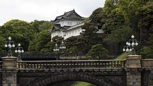
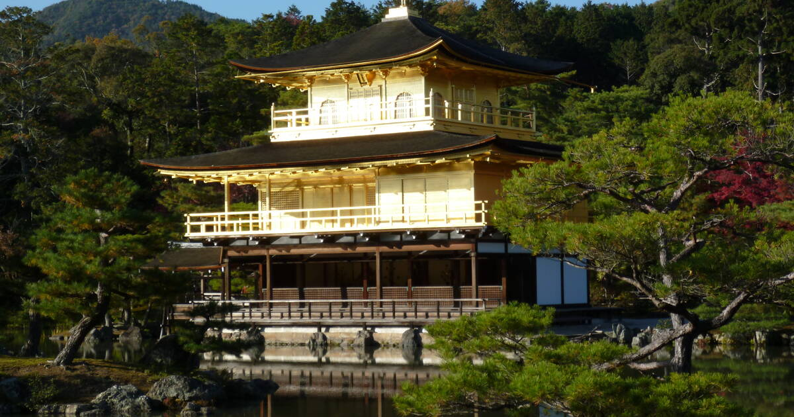

Trip to Japan

Mount Fuji
Mount Fuji is one of Japan's most famous tourist attractions and arguably one of the most impressive. The highest peak in Japan, Mount Fuji reaches 3776m above sea level. It is so tall that it can be seen from Tokyo, over 100km away!

Naoshima
The Imperial Palace is both literally and figuratively a hub of the Japanese capital. Located in central Tokyo, the palace grounds were once home to Edo Castle, the seat of government of the Tokugawa shogunate and the center around which the country is almost three Spun for
Historic Kyoto
Built in A.D. 794 on the model of the capitals of ancient China, Kyoto was the imperial capital of Japan from its foundation until the middle of the 19th century. The emperors of Japan ruled from Kyoto in the following eleven centuries until 1869. It was the scene of several key events of the Muromachi period, Sengoku period, and the Boshin War, such as the Ōnin War, the Honnō-ji Incident, the Kinmon incident and the Battle of Toba–Fushimi.
